Analiza rješenja · JOI Spring Camp 2020 · Dan 4
Glavni grad
O ovom članku
Tekst je prijevod službene japanske prezentacije rješenja, preoblikovan u članak. Slajdovi su ugrađeni kao slike; natpis pod svakim slajdom je prijevod teksta na njemu. Dijelovi označeni kao trenerska napomena nisu u izvornoj prezentaciji — dodani su da popune korake koje slajdovi preskaču ili samo skiciraju.
Slajdovi
Sažetak i preformulacija
izvorni slajdovi 1–4
-
1Naslovni slajd: Capital City, analiza: Isa Hiroyasu (HIR180). -
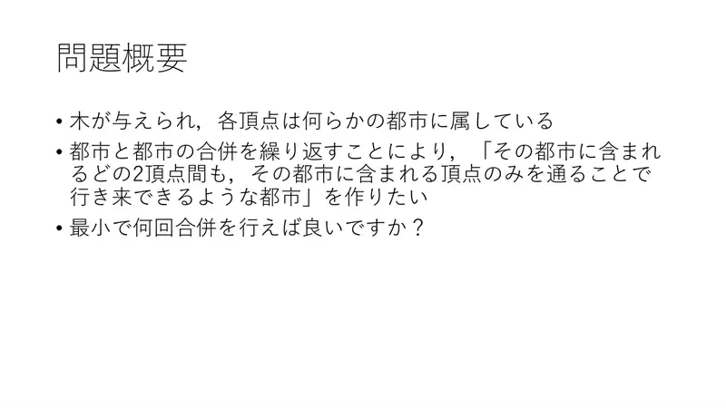
2Sažetak. Stablo, svaki vrh pripada gradu. Spajanjem gradova želimo grad u kojem se između bilo koja dva vrha može putovati samo kroz vrhove tog grada. Najmanji broj spajanja? -
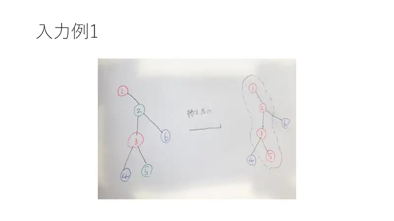
3Primjer 1. -
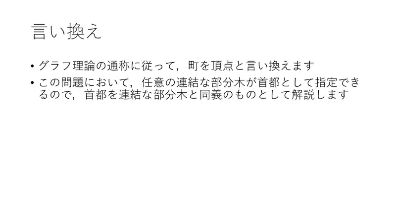
4Preformulacija. Mjesta zovemo vrhovima. Glavni grad = bilo koje povezano podstablo koje je unija gradova; nadalje „glavni grad” znači takvo podstablo.
← → tipke ili klik na sliku
Podzadaci 1–2 11 bodova
Koraci algoritma
Iscrpno i zatvaranje iz fiksnog vrha
izvorni slajdovi 5–7
-
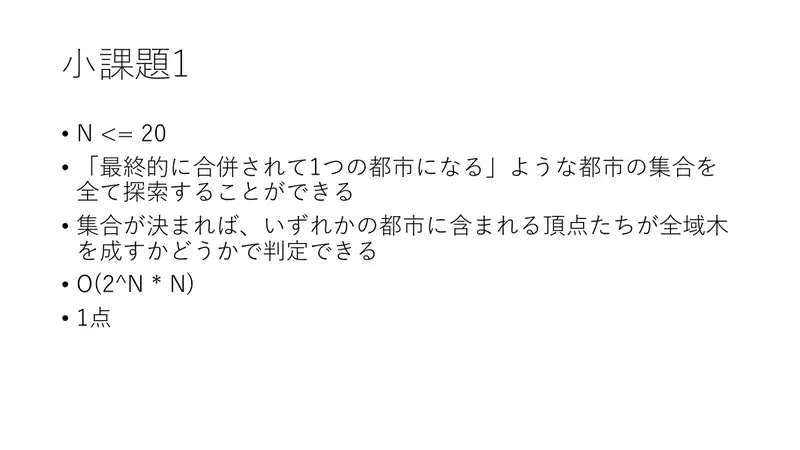
5Podzadatak 1. $N \le 20$: isprobaj sve skupove gradova koji se spajaju; provjeri je li unija njihovih vrhova povezana. $O(2^N N)$, 1 bod. -
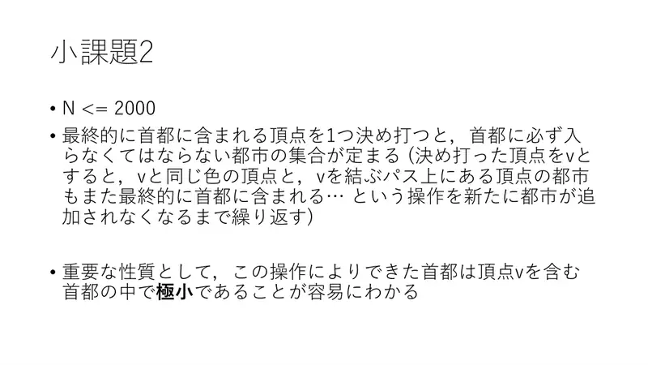
6Podzadatak 2. Fiksiraj vrh $v$ koji će biti u glavnom gradu: određen je skup gradova koji moraju ući (gradovi vrhova na putovima između vrhova istog grada kao $v$, pa rekurzivno…). Dobiveni glavni grad je minimalan među onima koji sadrže $v$. -
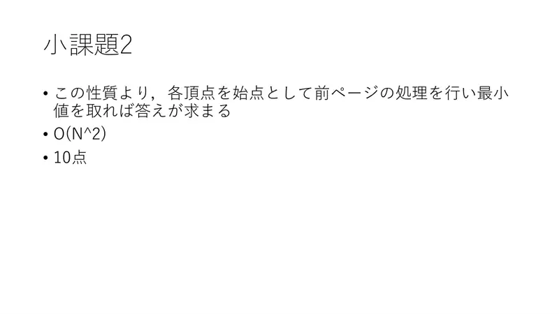
7Pokreni iz svakog vrha i uzmi minimum: $O(N^2)$, 10 bodova.
← → tipke ili klik na sliku
Podzadatak 3: stablo je put 30 bodova
Koraci algoritma
Tri pristupa na nizu
izvorni slajdovi 8–12
-
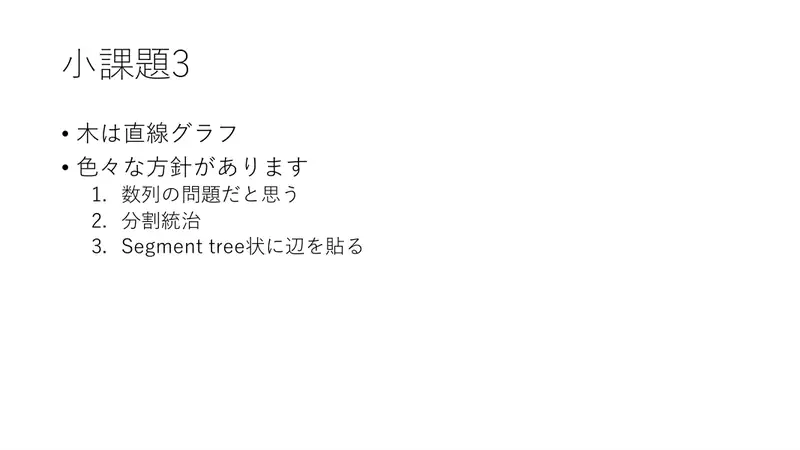
8Tri moguća pristupa: (1) problem na nizu, (2) podijeli pa vladaj, (3) bridovi preko segmentnog stabla. -
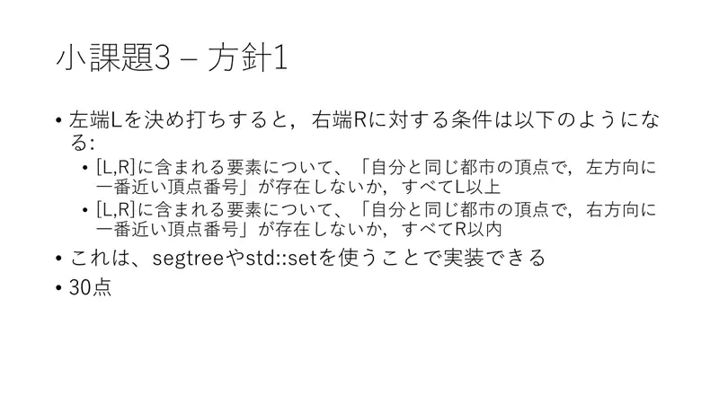
9Pristup 1. Fiksiraj lijevi kraj $L$; desni kraj $R$ mora zadovoljiti: za svaki element u $[L,R]$ najbliži lijevi vrh istog grada ne postoji ili je $\ge L$, i najbliži desni ne postoji ili je $\le R$. Provjerivo segmentnim stablom ili std::set-om. 30 bodova. -
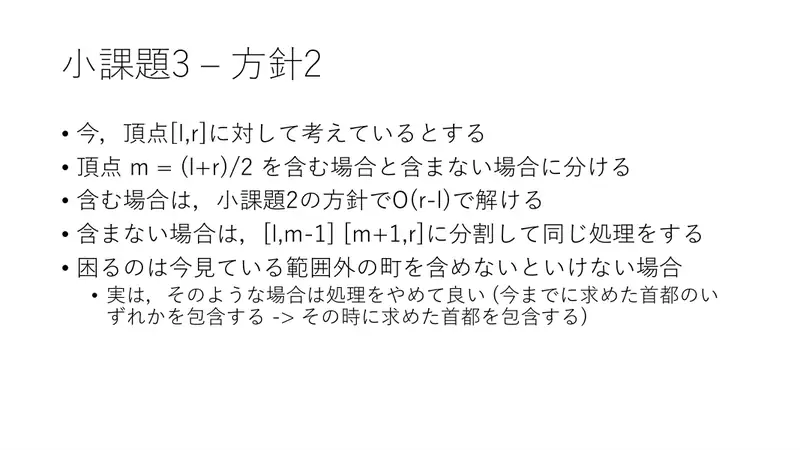
10Pristup 2. Za interval $[l, r]$ i $m = \lfloor (l+r)/2 \rfloor$: ako glavni grad sadrži $m$, riješi kao u podzadatku 2 u $O(r-l)$; inače rekurzivno na $[l, m-1]$ i $[m+1, r]$. Ako zatvaranje zatraži vrh izvan raspona — prekini: takav skup sadrži neki raniji „srednji” vrh pa sadrži i tada izračunan glavni grad. -
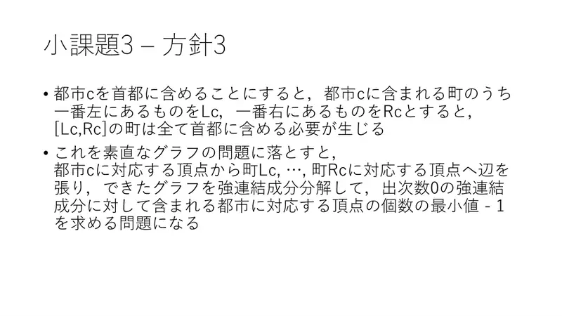
11Pristup 3. Ako grad $c$ ulazi, ulazi i cijeli $[L_c, R_c]$ (najlijeviji i najdesniji vrh grada). Graf: vrh grada $c$ → vrhovi mjesta $L_c, \ldots, R_c$; kondenziraj u SCC-ove; odgovor = najmanji broj gradova u SCC-u s izlaznim stupnjem $0$, minus $1$. -
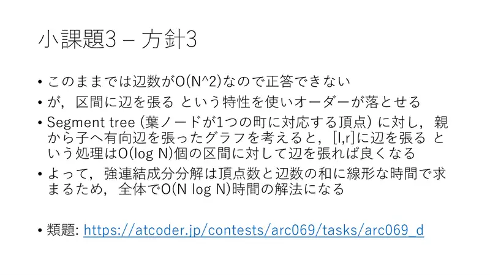
12Bridova je $O(N^2)$; ali „brid na interval” preko segmentnog stabla (bridovi roditelj → dijete) košta $O(\log N)$ bridova. SCC je linearan → $O(N\log N)$. Srodan zadatak: ARC069 F.
← → tipke ili klik na sliku
Puni bodovi 59 bodova
Koraci algoritma
Centroidna dekompozicija ili HLD + SCC
izvorni slajdovi 13–16
-
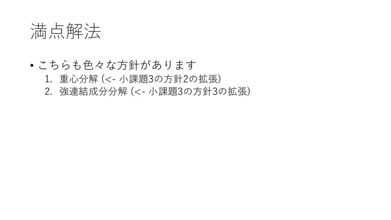
13Dva pristupa: (1) centroidna dekompozicija (proširenje pristupa 2), (2) SCC (proširenje pristupa 3). -
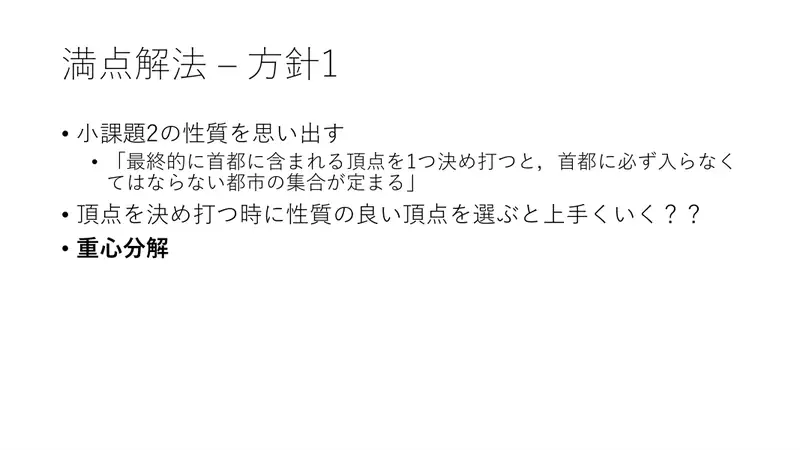
14Pristup 1. Sjeti se svojstva iz podzadatka 2: fiksiran vrh određuje minimalni skup gradova. Ako biramo „dobre” vrhove — centroid! -
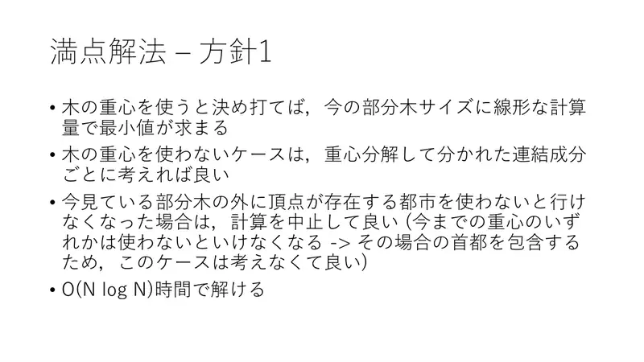
15Fiksiraj centroid: minimum se nađe u vremenu linearnom u veličini podstabla. Slučajevi bez centroida: rekurzija po komponentama. Ako treba grad koji ima vrh izvan trenutnog podstabla, prekini (tada je nužan neki raniji centroid, a taj je slučaj već pokriven). $O(N\log N)$. -
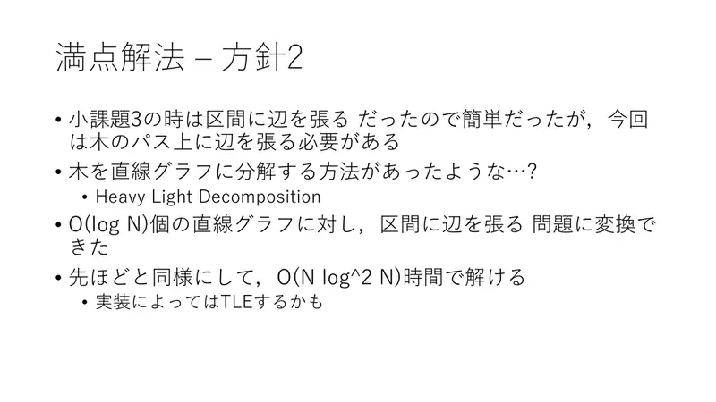
16Pristup 2. Na putu smo crtali bridove na intervale; sada treba na putove u stablu — Heavy-Light dekompozicija: put = $O(\log N)$ intervala. Kao prije, $O(N\log^2 N)$; ovisno o implementaciji može biti TLE.
← → tipke ili klik na sliku
Slajd
izvorni slajd 17
-
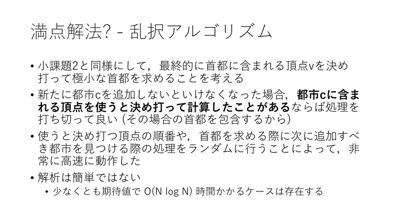
17Randomizirani pristup. Kao u podzadatku 2, fiksiraj $v$ i računaj minimalni glavni grad; ako zatreba grad $c$ čiji je vrh već bio fiksiran ranije, prekini. Uz slučajan poredak vrhova i slučajan izbor sljedećeg grada radi vrlo brzo; analiza nije jednostavna, a postoje slučajevi s očekivanim $\Omega(N\log N)$.
Sažetak
- Glavni grad = povezana unija gradova; cijena = broj gradova $-1$.
- Fiksiran vrh → jedinstveno minimalno zatvaranje; fiksiraj centroide i prekidaj kad zatvaranje napusti komponentu: $O(N\log N)$.
- Alternativa: SCC nad „grad → putovi” s HLD + segmentnim stablom, $O(N\log^2 N)$.